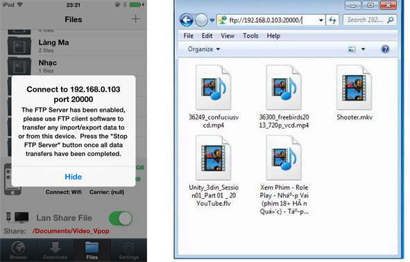

1 . Open the application and switch to " File " tab
2 . Turn On " Lan Share File "
3 . Select the folder that you want to share video
4 .
In Windows: open your computer and type the IP address and port of the device (which is currently in alert ) as follows.

5 .
In MacOS :From your Mac desktop hit Command+K to pull up the "Connect to Server" window (alternatively, you can access this from the "GO" menu)Enter the address of the ftp server in the following format: ftp://ftp.domain.com:port
example :ftp://192.168.0.117:20000